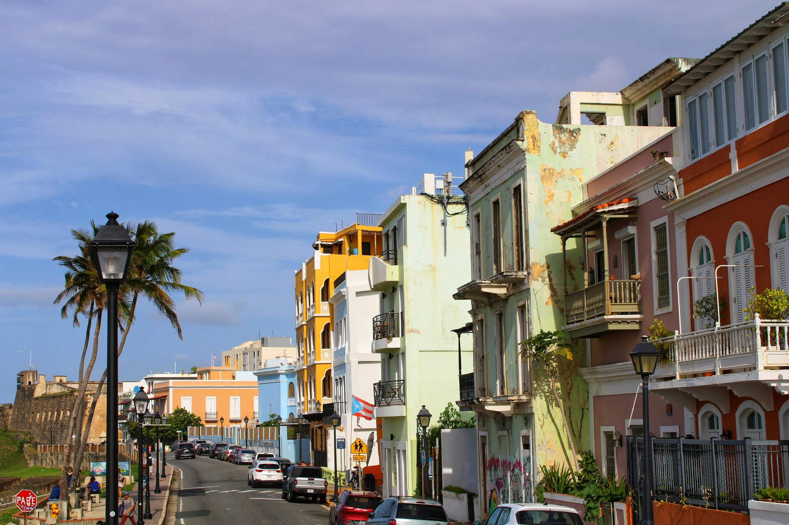

Old San Juan Walking Tours: History, Forts & Street Food

Old San Juan sits on a small island connected to the Puerto Rican mainland by three bridges. Within its 7 square blocks of Spanish colonial architecture, you'll find two massive forts, a 16th-century cathedral that holds the tomb of Ponce de León, blue cobblestones made from ballast iron shipped from Spain, and a density of cafés, rum bars, and street food stalls that makes the neighborhood feel simultaneously like a living museum and a neighborhood people actually live in.
Old San Juan: Inside El Morro Castle Walking Tour
$45.95 per adult · guided walk of the old city and the castle
Check Availability →Walking is the primary way to move through Old San Juan—the streets are narrow, most are one-way, and parking is scarce enough that driving in is pointless. This makes it one of the more naturally walkable historic districts in the Caribbean, and guided walking tours here cover more ground per hour than most comparable experiences elsewhere in Puerto Rico. The question isn't whether to walk it, but how much context you want while you do.
Combine your Old San Juan visit with a water tour or day trip
Browse All Puerto Rico Tours →The Layout of Old San Juan
The district runs roughly east-to-west along the northern coast of its peninsula. The eastern entry is Puerta de San Juan—a red arched gate in the old city wall where ships once offloaded and where tourists now photograph themselves. Walking west along the northern ramparts takes you past La Fortaleza (the governor's mansion, a UNESCO World Heritage Site) before hitting the twin forts: Castillo San Felipe del Morro at the northwest tip, and Castillo San Cristóbal to the northeast.
The interior streets run in a simple grid. Fortaleza Street and Sol Street are the main commercial corridors, lined with galleries, restaurants, and shops. Cristo Street runs along the western edge toward Parque de las Palomas—a plaza where dozens of pigeons have lived for generations and where locals sit in the late afternoon to catch the bay breeze. The southern waterfront along Paseo La Princesa is a renovated promenade with fountains and vendors that runs below the old city wall.
Key Sites on Any Walking Tour
Castillo San Felipe del Morro (El Morro)
El Morro is the large fort at the tip of the peninsula that controlled access to San Juan Bay from the 1540s onward. It's a National Historic Site managed by the National Park Service, with entry fees separate from any walking tour cost. The fort rises six levels from sea level, with views of the Atlantic to the north and the bay to the south. The lighthouse at the top is still operational.
Walking tours that include El Morro typically spend 45–60 minutes inside, covering the history of Spanish, British, Dutch, and American military involvement at the site. The green lawn (esplanade) in front of El Morro is where locals fly kites on weekends—a tradition that's been running for decades and creates one of the more photogenic scenes in the city.
Castillo San Cristóbal
San Cristóbal is the larger fort by footprint and the one that historically defended the land approach to Old San Juan from the east. Its tunnel system and multiple levels make it more complex to navigate than El Morro. The fort holds exhibits on the 1797 British siege and the social history of the soldiers who were garrisoned here. Entry requires a separate National Park Service admission.
Catedral de San Juan Bautista
The Cathedral of San Juan Bautista is the oldest cathedral in the Americas—construction began in the 1520s, though the structure has been rebuilt multiple times after hurricanes. The tomb of Juan Ponce de León is inside, brought from the Dominican Republic in 1836. Free to enter during visiting hours.
La Fortaleza (Palacio de Santa Catalina)
The oldest executive mansion in continuous use in the Western Hemisphere. Built in the 1500s as a fort, then converted to the governor's residence in 1640. Guided tours of the interior run on weekdays. The exterior view from Fortaleza Street—a long pink building above a garden wall—is one of the most photographed spots in Old San Juan.
Paseo La Princesa
The promenade below the old city walls along the southern waterfront. The path runs about 600 meters from the cruise ship piers to Puerta de San Juan, lined with sculptures, benches, and trees. Street food vendors set up here in the evenings. Walking tours that include the waterfront typically start or end here.
Food Stops Worth Building Into Your Walk
Old San Juan has a legitimate food scene that has nothing to do with tourist convenience. The restaurants and street vendors here feed locals as much as visitors, and the density of good options per square block is high enough that stopping to eat is genuinely productive, not just a time-filler.
Alcapurrias and Bacalaitos on the Street
Both are fried dough-based Puerto Rican street snacks. Alcapurrias are made from green banana and taro root, filled with crab or beef, and fried. Bacalaitos are thin saltfish fritters. Both are sold from carts near the cruise ship piers and along Calle San Sebastián in the evenings. Cost is roughly $1–2 per piece. Food-focused walking tours will stop at specific vendors.
Mallorca and Coffee
The mallorca is a Puerto Rican breakfast pastry—a sweet, eggy roll dusted with powdered sugar, often eaten with butter and ham. Bakeries along Fortaleza and San Francisco streets serve them fresh in the morning. Most walking tours that start before 10am work a coffee and mallorca stop into the first hour.
Calle San Sebastián for Evenings
The annual San Sebastián Street Festival draws tens of thousands in January, but the street itself functions as Old San Juan's nightlife spine year-round. Bars, restaurants, and outdoor tables line the block near the cathedral. If your walking tour ends before dinner, this is where to head next.
Guided Tour Options for Old San Juan
While Old San Juan is completely walkable without a guide, a structured tour adds historical context that street signage alone doesn't provide. Several local operators offer walking-focused experiences.
Bucketlist Tours runs private history-focused excursions through San Juan that include the old city district. Their tours are customized to group size and interests—some clients focus on military history at the forts, others on food and architecture. Private format means you set the pace and focus. Their guides are bilingual and tend to run longer than the standard 2-hour group tour.
For travelers who want Old San Juan as part of a broader cultural day, Borikua Tours' Harvest + Cook experience (departing San Juan) gives context about Puerto Rican food traditions before you eat your way through the historic district. It doesn't replace a walking tour of the forts, but it adds a dimension of local food knowledge that most history-focused guides don't cover.
Old San Juan: Inside El Morro Castle Walking Tour
Explore Old San Juan’s top landmarks in 2.5 hours, including a guided tour inside El Morro Fortress, San Juan Cathedral, Governor’s Mansion, and more. Local guides share rich history and culture in this…
Location: San Juan
Check AvailabilityOld San Juan Historic Walking Tour
Explore Old San Juan’s rich history in just 2 hours with a local guide. Visit iconic landmarks, learn about Taino, Spanish, and African roots, and uncover hidden gems in this vibrant, centuries-old city.
Location: San Juan
Check AvailabilityOld San Juan: Sunset Walking Tour
Enjoy a stunning sunset stroll through Old San Juan’s historic streets, with views of forts, palaces, and colorful architecture. Guided by locals, this 2-hour tour reveals Puerto Rico’s rich culture and…
Location: San Juan
Check AvailabilityOld San Juan Historical Walking Tour
Step back over 500 years on this lively 2-hour walking tour through Old San Juan. Explore iconic landmarks like San Felipe Fortress, the cathedral, and colorful cobblestone streets. Capture stunning photos…
Location: San Juan
Check AvailabilityPractical Information for Your Visit
When to Go
Old San Juan is at peak crowd density on cruise ship days, which can bring 10,000+ additional visitors to the seven-block district between 8am and 4pm. The cruise ship schedule is publicly available—check it if you want to avoid the density. Weekday mornings (before 9am) and late afternoons are consistently the least crowded. Evenings in Old San Juan are a different scene entirely: restaurants and bars fill with locals, and the streets have a completely different feel than midday.
Getting There
From Condado and Miramar hotels, rideshare services take about 10–15 minutes to the cruise ship piers or Puerta de San Juan. From Isla Verde (the airport hotel strip), budget 20–30 minutes. There's a free trolley that runs through Old San Juan, but it runs on irregular schedules and shouldn't be relied on for getting anywhere at a specific time.
What to Wear
Comfortable shoes are non-negotiable. The blue cobblestones are historic but they're also uneven—ankle-twisting on heels and uncomfortable in thin-soled shoes after two hours of walking. Light, breathable clothing handles the heat. Sun protection is important for the El Morro esplanade, which has no shade.
Combining Old San Juan with a Water Tour
A common San Juan itinerary pairs a morning walking tour of Old San Juan (2–3 hours, ending before lunch) with an afternoon water activity at Condado Lagoon. This works logistically because the two areas are 15–20 minutes apart by rideshare, and afternoon is actually a fine time for Condado Lagoon kayaking—the trade winds are up but the lagoon is sheltered enough to stay manageable.
For a fuller day, some travelers do Old San Juan in the morning, lunch at a restaurant on Fortaleza or San Francisco Street, then drive or rideshare to Fajardo for an evening bio bay kayak tour. The timing works if you leave Old San Juan by 2pm and reach Fajardo by 3pm—plenty of buffer for a 7pm bio bay departure. See our Fajardo boat tours guide and bio bay tour guide for Fajardo options.
What Walking Tours Don't Cover
Walking tours stay within the historic district by design. They don't typically include:
- The El Yunque rainforest (about 40 minutes east—see our El Yunque tour guide)
- Condado beach or Isla Verde beach (separate from the old city)
- Ocean Park or Santurce arts district (east of Old San Juan, better covered on a separate half-day)
- Day trips to Vieques or Culebra (these require 5+ hours of travel and are separate full-day experiences)
Old San Juan is genuinely one of the better-preserved colonial city centers in the Americas. Three hours there with a decent guide covers the main sites and leaves you knowing more about Spanish colonial Puerto Rico than most visitors who spend a full day wandering without context. Build it into your itinerary on the front end of your trip before you start making the longer drives across the island.
See also: San Juan Tours Overview · El Yunque Tours · Fajardo Boat Tours
Book a water tour to pair with your Old San Juan visit
Browse All Tours →